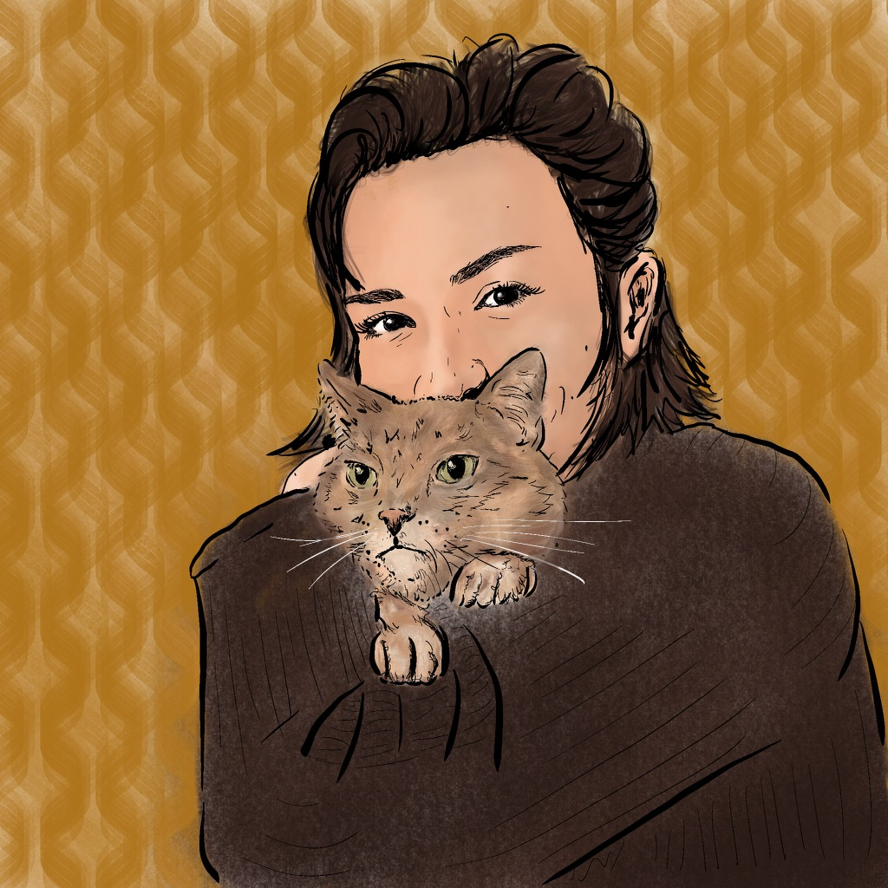

I am a student in the Library and Information Science program at Pratt Institute School of Information. This page is intended to showcase both my personal and academic endeavors. You'll find a sampling of my visual art projects, a spread of baked goods and pastries, and papers that I've authored.
I began my undergraduate work in English and Linguistics at UW-Milwaukee. I learned to bake in Kailua-Kona, Hawaii. I also adopted two cats -- Helen and Pippa -- along the way. From there, we moved to Denver. While in Colorado, I finished my undergraduate degree at MSU Denver and managed the bread program at a vegan bakery. Here in New York City, I'm working as a Library Page for the Stephen A. Schwarzman's Wallach Division of Art, Prints, and Photographs.
Thank you for visiting.